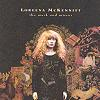

Celtic Lyrics Corner > Artists & Groups > Loreena McKennitt > The Mask And Mirror
|  |
The Mask And Mirror
(1994) |
| Tracks : |
1.
The Mystic's Dream
2. The Bonny Swans 3. The Dark Night Of The Soul 4. Marrakesh Night Market 5. Full Circle 6. Santiago 7. Cé Hé Mise Le Ulaingt?/The Two Trees 8. Prospero's Speech |